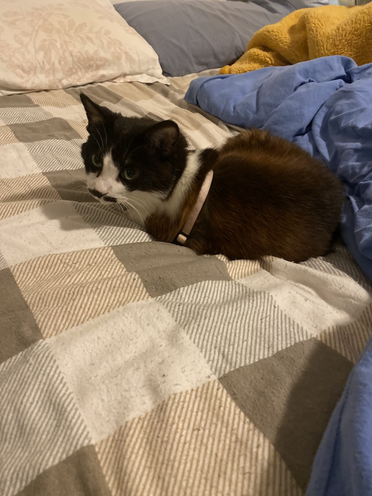
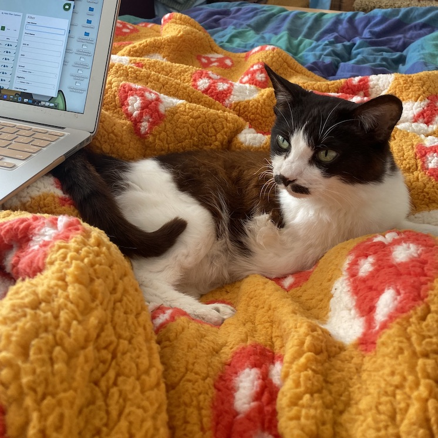
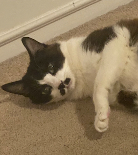
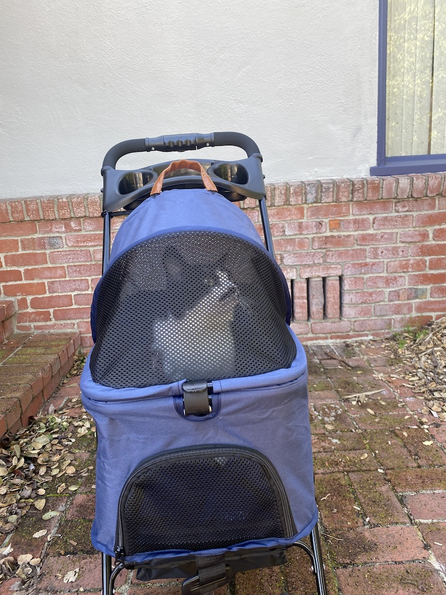

Jellybean was originally found as a three-legged barn cat in Willits, CA and was noticed to be very sweet and friendly, although a little skittish. She was rescued from the barn life and then adopted in 2019. It took her a few months to start coming out of her hiding places but eventually she started to learn the joys of human snuggles. Now she prides herself in her cuddling and snuggling abilities and considers herself among the World's Top 100 Snugglers and Cuddlers.

1. My cat Jellybean, sitting on the bed.

2. She has a very important job supervising me work...

3. This is what I call her "perfect portrait photo".

4. Sometimes I take her outside to go on adventures in her cat stroller.
She has started enjoying these trips outside more and more. She used to meow the entire time, but now she'll calm down after a few minutes.